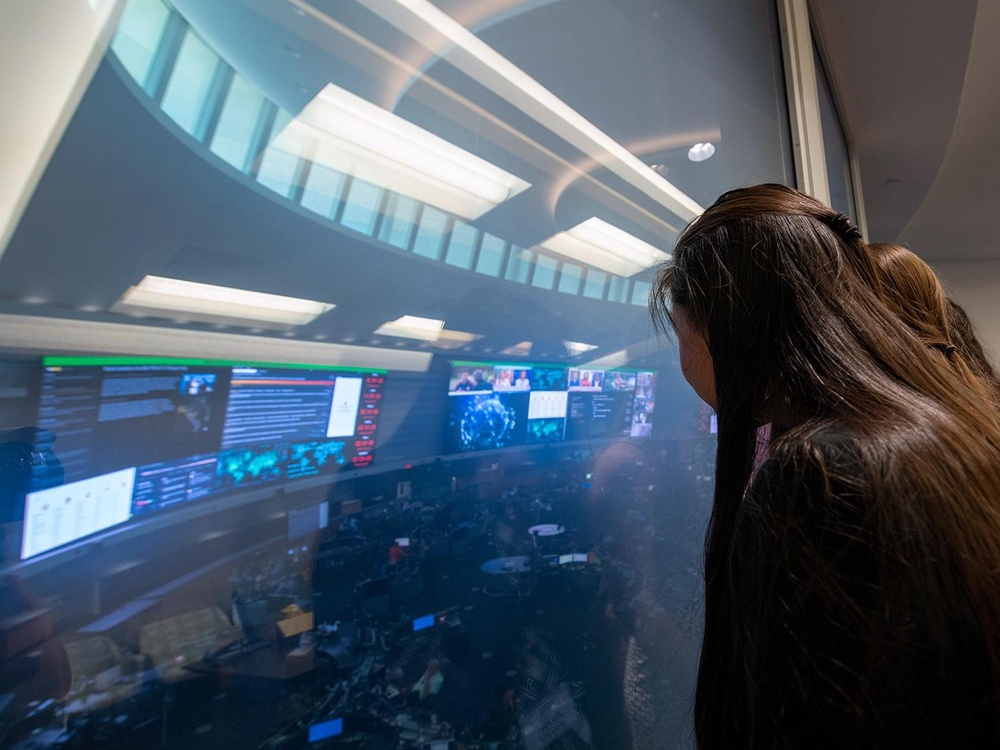

THE FAR SIDE WIREThe record, on the record. The story, labeled as story.Week of Nov 16–20, 2026 · With Episode 3
The Record = real news, sourced & dated. Tonight's Story = Fiction, labeled as such. The two never mix.
The government posted 43 more UAP files this week. Watch the record — then the story.
Moving: sensor video from the PURSUE archive — DOW-UAP-PR135, Middle East, 2025 (Release 06): small objects crossing the frame, listed by the government as unresolved. Video: U.S. Central Command via AARO/DVIDS — public domain.
Watch — Tonight's Story
Fiction
Everything in this section is invented — a sci-fi drama built on this week's real record, below.
Episode 3 Teaser — Roswell, the record, and the three words. Fiction warning up front.
Tonight's Short — every phone on Earth got the same 3 words.
Episode 2: The Week Everything Blinked — the outage week, as the watchers saw it.
Episode 1 — the series premiere. Where it starts.
This Week's Record
Real · Sourced · Dated
The real stories behind this week's episode — short, straight, sources linked.
The outage week, officially: a rushed patching sprint, not an attack
DNI Jay Clayton told Congress Wednesday that the outage week — Microsoft, Chase, United, Apple Pay, NSA — was separate maintenance failures from patches rushed out after AI found flaws fast. DHS Secretary Mullin put his confidence at 98%; a Rapid7 researcher told Bloomberg the public evidence doesn't link every outage to patching.
Sources: Reuters · CNN · NextGov (Nov 18, 2026)
Pentagon posts 43 more UAP files — PURSUE Release 08
A UAP frame from a U.S. Navy cockpit, shown to Congress in 2022. Photo: U.S. Navy via DVIDS — public domain.
Release 08 (Friday) adds 43 files — six 1952 CIA “flying saucer” papers, 1949–66 Air Force reports, and three Middle East videos. The archive now holds 521 records, all officially unresolved: “the government is unable to make a definitive determination.”
Source: Department of War, PURSUE archive — war.gov/UFO (Nov 20, 2026)
The cyber gate changed guards: National Cyber Director out
Sean Cairncross was removed Thursday night, a year after confirmation; Pentagon CIO Kirsten Davies takes over as acting. The record is split — Reuters/CNN sources say fired, Axios sources say amicable — so both versions stand here.
NSA network dark a third day; DHS chief reportedly sidelined from TV

File photo (2022): the NSA's Integrated Cyber Center watch floor, Fort Meade. Photo: U.S. Department of Defense via DVIDS — public domain.
CNN reported the NSA's internal network down a third day (“code orange”) and DHS Secretary Mullin reportedly benched from TV (Politico, via CNN). Officials have not confirmed any hack — the system is internal, not on the public internet.
Chase, Visa and Mastercard confirm vendor breaches
Chase disclosed attackers hit its outside vendors and accessed marketing data — possibly some customer names and emails. Visa and Mastercard confirmed vendor incidents the same day; all three say no payment data was taken and the banks' own systems weren't breached.
FTC warning: the “grandkid in trouble” call may be a cloned voice
The FTC's fresh alert: scammers clone a loved one's voice and beg for secret bail money. Don't trust the voice — hang up, check with family, and use a family code word.
“Paris airport CLOSED by drones” — the record says: a 17-minute hold
Posts on X claimed Paris CDG was closing over drones. The record: inbound flights held ~17 minutes, then normal operations — the airport never closed. (Genoa's airport did close that evening, ~2 hours; the two got conflated.) A hold is not a closure. Check first.
Real record: NASA photo from STS-48 (September 1991) — the UARS satellite in Discovery's robot arm. The teaser's “archive tape” is this mission's real onboard footage; NASA's ice-particle explanation for it stands on the record. The Wire segment plays the moving footage; this page carries the still. Photo: NASA/MSFC — public domain.